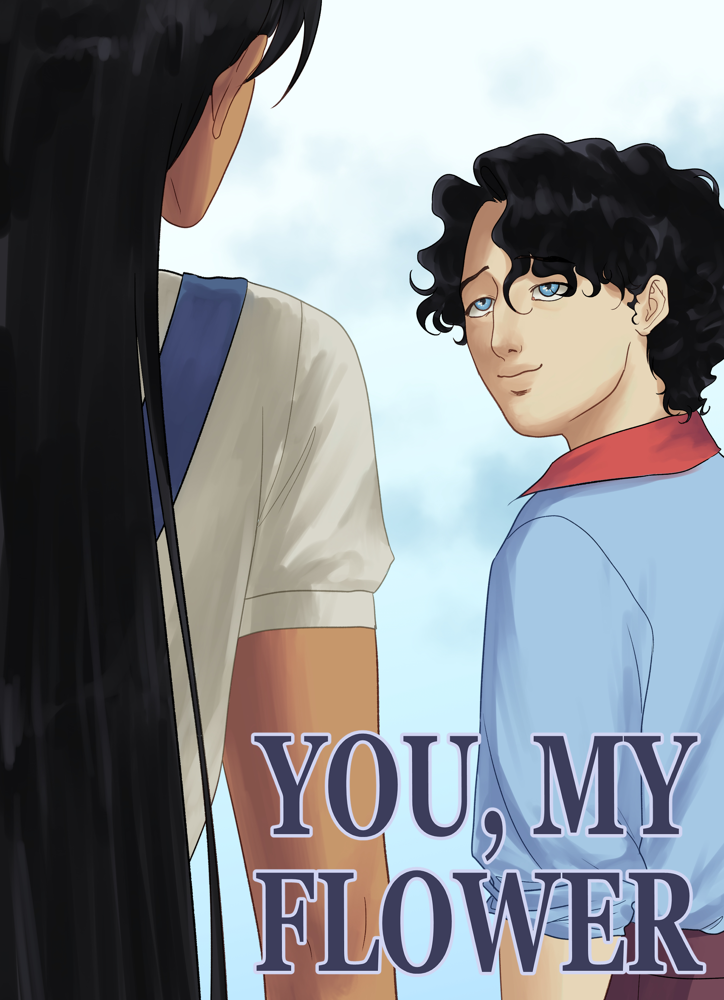
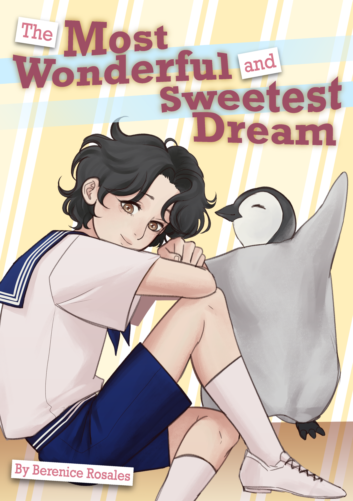
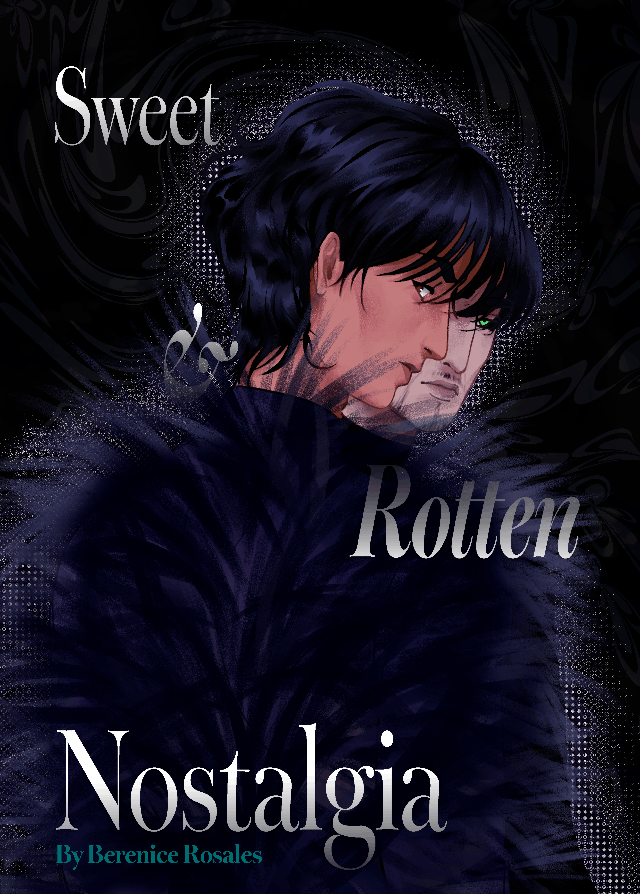

The comic entries I have done for the Global Comic Awards!
| Themed Works | ||
|---|---|---|
 |
First Love: You, My Flower (2025) | A young man, Ryuu, reflecting on the relationship he has with the person he loves most: Andrée. A love letter of sorts. |
 |
Journey: The Most Wonderful and Sweetest Dream (2026) | A young boy named Boone who didn't have the best day but is visited by his suddenly living plushie, Pochi the Penguin! Together they explore a fantastical world of delicious sweets - a perfect escapade for all of Boone's worries. |
 |
Impact: Sweet & Rotten Nostalgia (2026) | Andrée visits her father, Timothée, and reflects about both the past and present - in particular, how he impacted her as a person. A rather bittersweet visit, but she remains hopeful of the future. |